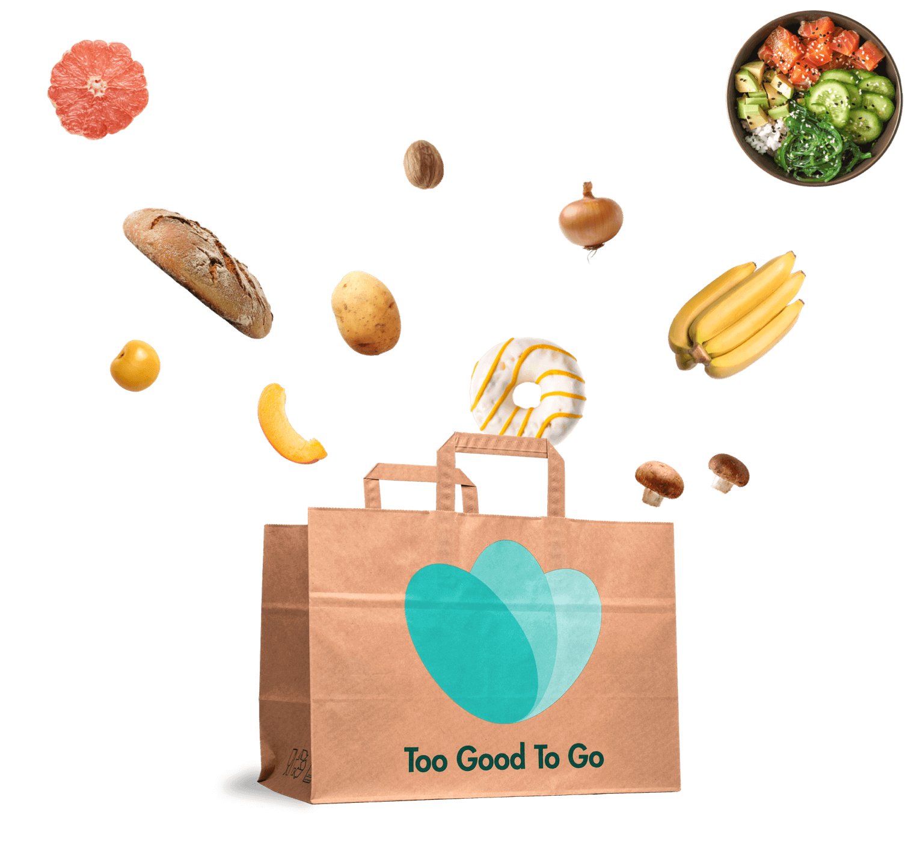

Red eten help de planeet
Geef heerlijke producten een tweede kans
En tegen lage prijzen
Wij dromen van een planeet zonder voedselverspilling. Hier elke dag aan werken voelt als een droom die werkelijkheid wordt. Onze app is de meest effectieve manier om jou ook meteen aan die droom te laten werken - download de app, log in en start met het redden van heerlijke producten die jouw lokale ondernemer aan het einde van de dag overhoudt. Altijd een verrassing tegen een lage prijs en je doet meteen iets goed voor de planeet. Start vandaag nog!

Meer dan 1/3e van al het eten wordt verspild!
48.534.966
Nederlanders gebruikers redden al Magic Boxen bij ...
128.594
cafés, restaurants, supermarkten, bakkers, hotels (en veel meer!) die samen
104.527.185
miljoen maaltijden hebben gered, en daar nog steeds mee bezig zijn!
Maak het verschil!
Wij bouwen aan iets groots
Om een echte impact te maken op het probleem dat voedselverspilling heet, pakken we publieke zaken aan, stellen we opleidingen op en werken we hand in hand met huishoudens en bedrijven. Ontdek nog meer van onze acties hier!
Ontdek meerEen no-brainer voor de ondernemers
Jij maakt hier een (groot) deel van uit!
Wij houden ervan om nieuwe partners te verwelkomen in de strijd tegen voedselverspilling. Wij helpen je om kosten te verlagen en je CO2-voetafdruk te verkleinen, wat je ook verkoopt. Het is 100% beter voor jou en de planeet.
Registreer mijn onderneming